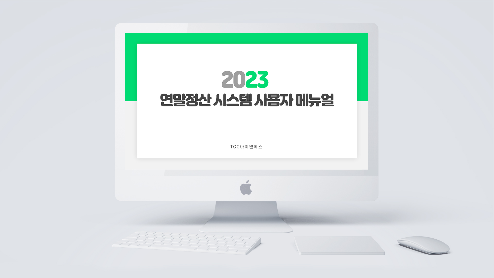
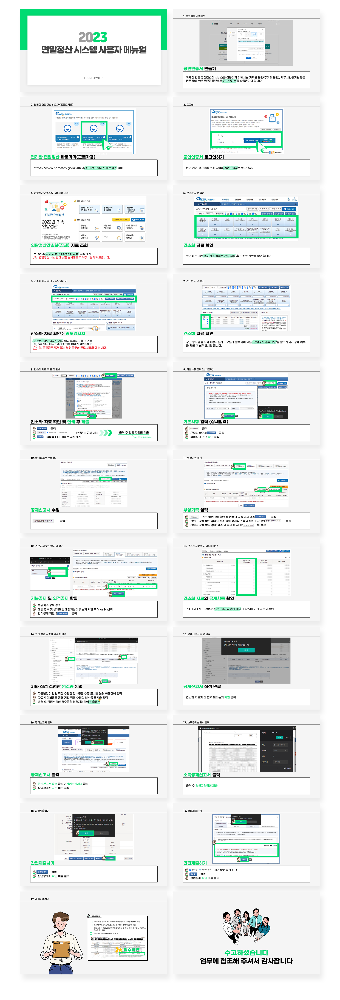

사내 연말정산 시스템 사용자 메뉴얼 PPT 디자인
OVERVIEW
기존에 올드하고 알아보기 어려웠던 사내 연말정산 시스템 사용자 메뉴얼 PPT를 새롭게 디자인하였습니다. 이번 디자인에서는 직관적이고 깔끔한 레이아웃을 적용하여 사용자가 쉽게 이해할 수 있도록 하였으며, 시각적 요소를 강화하여 정보 전달의 효율성을 높였습니다. 또한, 단계별 설명과 시각적 가이드를 추가하여 사용자들이 연말정산 과정을 보다 편리하게 따라갈 수 있도록 하였습니다.
- TYPE.
- Editorial design
- CLIENT.
- 연말정산 시스템 메뉴얼 디자인
- Individual work.
- 2022.12 (2 hours)
- 작업내역
-
포토샵
파워포인트

